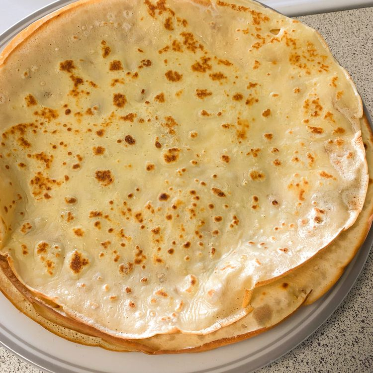

Recipe for crêpes

Description
Simple recipe of delicious crêpes.
Ingredients
- 700 ml milk
- 400 g flour
- 100 g brown sugar
- 80 g butter
- 6 eggs
- 2 g salt
Steps
- Add the eggs to a bowl and beat them.
- Add the brown sugar, salt, and mix.
- Melt the butter.
- Add the flour and melted butter to the mixture, stirring everything until you get a thick dough.
- Add one-third of the milk and mix well. Repeat the process.
- Let it rest for 1 hour in the refrigerator.
- Final step place a pan over medium heat. Lightly grease with a bit of butter.
- Cook until the edges start to lift from the pan and the surface is set, about 1-2 minutes.
- Flip the crêpe and cook the other side for an additional 30 seconds to 1 minute.
Done!
This classic recipe of french gastronomy is ready to be enjoyed !
Back